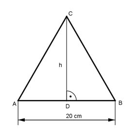

Aufgabe 276 Ein 55 cm langer Dreikantstahl hat die Form eines Pyramidenstumpfes mit gleichseitigen Dreiecken als Grund- und Deckfläche. Seitenlänge unten 20 cm, oben 5 cm. Wie groß ist der Abfall A, wenn der Stumpf zu einer geraden Pyramide mit gleicher Grundfläche abgeschliffen wird? A = PStumpfvolumen VPS - Pyramidenvolumen VP Höhe der Grundfläche:

Satz von Pythagoras im Dreieck DBC: BC = AB = AC = 20 cm DB = AB/2 = 20 cm/2 = 10 cm BC2 = DB2 + DC2 | - DB2 DC2 = BC2 - DB2 = 202 cm2 - 102 cm2 = 300 cm2 |√ DC = 17,32 cm = h Höhe der Deckfläche: hD2 = 52 cm2 - 2,52 cm2 = 18,75 cm2 |√ hD = 4,33 cm V = 20 cm * 17,32 cm G1 = -------------------- = 173,2 cm2 2 5 cm * 4,33 cm G2 = ----------------- = 10,8 cm2 2 VPS = cm3 55 VPS = ---- * (173,2 + 43,2 + 10,8) cm3 3 VPS = 4 165 cm3 G1 * hP 173,2 cm2 * 55 cm VP = ---------- = -------------------- = 3 175 cm3 3 3 A = 4 165 cm3 - 3 175 cm3 = 990 cm3